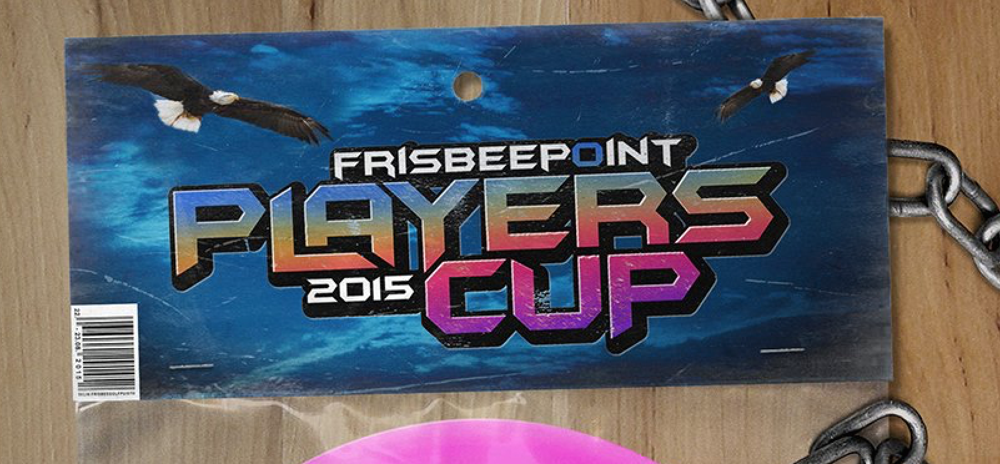

Kirjaudu sisään | Rekisteröidy

Kisakone

HUOM!!! 21.8.15
Vielä mahtuu mukaan. Ilmo on auki keskiyöhön asti, tilaa on.
Ilmoittautunut, mutta maksamatta? Ei hätää, aamulla paikalle n. klo 08:00, 20€ seteli mukaan ja loppupäivä pelataan.
TD -Top1- SMS 044 566 00 51
************************************************
HUOM!!! 7.8.15
Saamamme palautteen perusteella olemme päättäneet muuttaa Players Cupin yksipäiväiseksi tapahtumaksi. Formaatti pysyy ennallaan, mutta käytännössä pelattavien pelien kesto puolitetaan. Kisa viedään läpi 4x9 väyläisenä, jolloin yksi ottelu on aina 3 väylän mittainen. Tämähän tarkoittaa yllätysmahdollisuuksia ja moni ottelu tulee päättymään tasan. Uskomme kuitenkin, että paras voittaa lopulta varmasti!
Kisassa pelataan Talin viikkokisoista tutulla kierrolla, siten että 9 väylän aikana 4 henkilön ryhmä pelaa toisiaan vastaan selvittäen paremmuusjärjestyksen. Voitosta 2 pistettä ja tasurista 1 piste. Pisteet ratkaisevat, sitten keskinäinen ottelu ja jos ratkaisua ei järjestyksestä saada, niin pelataan ctp.
Kisa tiivistyy, mutta vastaavasti kisan palkinnot paranee. Arvomme kaikkien osallistujen kesken kolme Grip EQ bägiä - yhden kutakin mallia.
Kisaan mahtuu vielä muutama pelaaja, joten tervetuloa mukaan!
*******************************************************************
Talin Frisbeegolfpyhättö 22.-23.08.2015
Olisiko sinusta suomen reikäpelikuninkaaksi?
Kierrokset on pääosin hyviä, mutta joskus putti tökkii? Mörrin ahteri, kenties näyttäytyy muutamalla väylällä? Loppu on pelkkää kotkaa ja pikkulintuja?
Taidat olla etsimämme henkilö, koska reikäpelissä olisit jo mestari. Toki Bogey free kierros antaaa myös pontentiaalia ko. tapahtumaan. Tsot, tsot, eipäs hoppuilla. PDGA rating, nimittäin määrää tämän tapahtuman marssijärjestyksen, ilmoittautumisesta, parinmuodostukseen.
Formaatti on kenties joillekkin tuttu viimevuoden tapahtumasta, jossa yhden kierroksen (9 väylää) aikana 4 pelaajan ryhmä pelaa toisiaan vastaan 3 väylän otteluita. Kierroksen jälkeen, ryhmän pelaajat ovat paremmuusjärjestyksessä, josta kukin jatkaa kaaviossa eteenpäin ja seuraavalle kierrokselle. Viimeisellä, eli toisen päivän toisella (4. kierros, jonka kukin pelaaja tulee pelaamaan) kierroksella ratkaistaan lopulliset sijoitukset ja reikäpelikunkku!
Kisainfoa
Yksi luokka AVOIN (NAISET, ovat tervettulleita ja palkitaan erikseen, mutta sijoitetaan avoimen kaavioon).
Ilmoittautuminen aukeaa Ma. 06.07.2015, Klo. 09:00
Ilmoittautuminen päättyy 21.08.2015 klo. 23:59
Jonosta nostetaan pelaajia sitä mukaan, kun ilmenee peruutuksia tai maksuja jää tulematta.
Nostetuille pelaajille lähtee tieto ko. tapahtuman johdosta.
Osallistumismaksu 20 €. Maksathan maksun heti.
Osallisatumismaksu maksetaan tilille: FI23 3131 3001 1674 10, Talin Tallaajat Ry, Viestikenttään FPC II ja nimi.
- Payout vähintään 80 % (cash) osallistumismaksuista (reilusti yli 100%, kun mennään materiaan).
- Palkinnot TOP 16 (cash). Viimeisen kierroksen poolikärjet palkitaan. Ts. ole sijalla 61, 57, 53, ym. ja kärrää palkintoja kotiin.
| Nimi | Frisbeepoint Players Cup 2015 |
| Paikka | Tali |
| Aika | 22.08.2015 |
| Taso | Erilliskilpailu |
| Yhteystiedot |
Aikataulu
| Kierros | Lähtöaika |
|---|---|
| Kierros 1 | 22.08.2015 17:00 |
Ajankohtaiset uutiset
Aikataulumuutos !
************************************************
HUOM!!! 7.8.15
Saamamme palautteen perusteella olemme päättäneet muuttaa Players Cupin yksipäiväiseksi tapahtumaksi. Formaatti pysyy ennallaan, mutta käytännössä pelattavien pelien kesto puolitetaan. Kisa viedään läpi 4x9 väyläisenä, jolloin yksi ottelu on aina 3 väylän mittainen. Tämähän tarkoittaa yllätysmahdollisuuksia ja moni ottelu tulee päättymään tasan. Uskomme kuitenkin, että paras voittaa lopulta varmasti!
Kisassa pelataan Talin viikkokisoista tutulla kierrolla, siten että 9 väylän aikana 4 henkilön ryhmä pelaa toisiaan vastaan selvittäen paremmuusjärjestyksen. Voitosta 2 pistettä ja tasurista 1 piste. Pisteet ratkaisevat, sitten keskinäinen ottelu ja jos ratkaisua ei järjestyksestä saada, niin pelataan ctp.
Kisa tiivistyy, mutta vastaavasti kisan palkinnot paranee. Arvomme kaikkien osallistujen kesken kolme Grip EQ bägiä - yhden kutakin mallia.
Kisaan mahtuu vielä muutama pelaaja, joten tervetuloa mukaan!
*******************************************************************
Ilmoittautuminen avoinna 10.8. asti
Vielä muutama paikka vapaana kisaan! Tule ja koe formaatti, jota ei ole missään muualla!